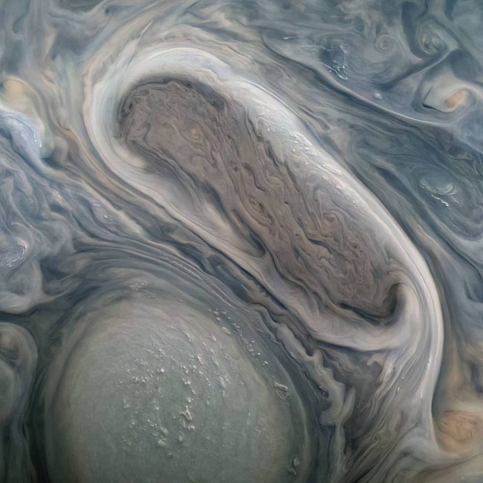

Astronomers spot small black hole
beyond the Milky Way
in milestone discovery

 This JunoCam image shows two of Jupiter's large rotating storms, captured on Juno’s 38th perijove pass, on Nov. 29, 2021. Credits: NASA/JPL-Caltech/SwRI/MSSS Image processing: Kevin M. Gill CC BY
Sounds from a Ganymede flyby, magnetic fields, and remarkable comparisons between Jupiter and Earth's oceans and atmospheres were discussed during a briefing today on NASA's Juno mission to Jupiter at the American Geophysical Union Fall Meeting in New Orleans. Juno Principal Investigator Scott Bolton of the Southwest Research Institute in San Antonio has debuted a 50-second audio track generated from data collected during the mission's close flyby of the Jovian moon Ganymede on June 7, 2021. Juno's Waves instrument, which tunes in to electric and magnetic radio waves produced in Jupiter's magnetosphere, collected the data on those emissions. Their frequency was then shifted into the audio range to make the audio track. “This soundtrack is just wild enough to make you feel as if you were riding along as Juno sails past Ganymede for the first time in more than two decades,” said Bolton. “If you listen closely, you can hear the abrupt change to higher frequencies around the midpoint of the recording, which represents entry into a different region in Ganymede's magnetosphere.”
Detailed analysis and modeling of the Waves data are ongoing. “It is possible the change in the frequency shortly after closest approach is due to passing from the nightside to the dayside of Ganymede,” said William Kurth of the University of Iowa in Iowa City, lead co-investigator for the Waves investigation.
At the time of Juno's closest approach to Ganymede - during the mission's 34th trip around Jupiter - the spacecraft was within 645 miles (1,038 kilometers) of the moon's surface and traveling at a relative velocity of 41,600 mph (67,000 kph).
Related PostsAstronomers spot small black hole
beyond the Milky Way
in milestone discovery